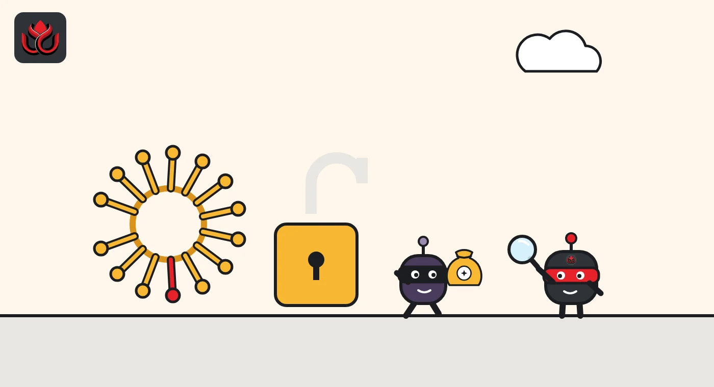
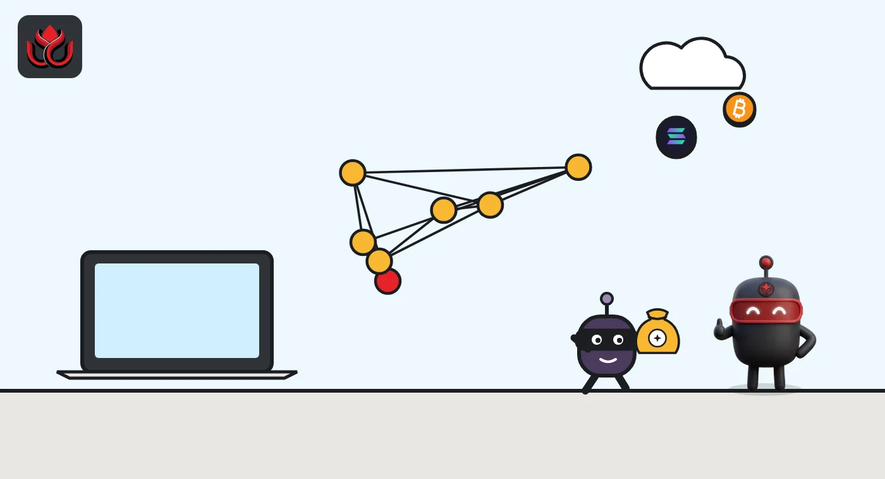

Beyond Binance: 19 more crypto hacks in October's last 11 days, about $24.6 million lost
Binance's $6.3 billion breach dominated October, but SlowMist logged 19 other attacks from October 21 to 31, close to two a day. They range from a $7.45 million multisig mistake to supply chain and DNS attacks.
Key points
- SlowMist logged 19 crypto hacks besides Binance between October 21 and 31, 2026, close to two a day.
- The 17 with a dollar figure add up to about $24.6 million. The biggest was a misconfigured Safe multisig on Avalanche ($7.45 million).
- Most came through known weak points: borrowed voting power, leaked keys and hacked third-party tools, not broken smart contracts.
- DeepSea's hack tracker puts the Binance breach at about $3.4 billion on Ethereum, not SlowMist's $6.3 billion, and says Binance has not confirmed a hack.
 What DeepSea's data shows
What DeepSea's data shows
DeepSea puts the Binance breach at about half SlowMist's figure. DeepSea's hack tracker lists it at $3.40 billion, all on Ethereum, against the $6.3 billion in SlowMist's database cited below. DeepSea says social media totals of up to $5.6 billion include Bitcoin and Tron outflows that have not been linked to the attacker.
DeepSea also differs on Binance's response. It says Binance has paused withdrawals, says user funds are safe and has not confirmed a hack, while SlowMist notes that Binance said it will cover all losses. On method, DeepSea describes the on-chain step rather than the entry point: on October 29 at about 4:24 p.m. ET, the Binance 14 hot wallet on Ethereum was taken over through an EIP-7702 delegation installed minutes earlier by a mixer-funded address, then emptied of about 167,000 ETH and 63 tokens, including about 1.6 billion USDT, in a single transaction. That does not necessarily contradict SlowMist's compromised laptop.
According to DeepSea, stablecoin issuers have frozen about $2.4 billion in USDT and USDC. Several analytics firms link the attack, with high confidence, to the North Korea-linked group behind the Bybit hack; Binance has not confirmed who is responsible. DeepSea also reports that funds from this hack and from the Bitget exploit were sent to the same address.
None of the 19 smaller incidents in this article appear on DeepSea's hacks list, and its latest weekly reports stop at October 18, so DeepSea has no data on them yet.

Data: DeepSea (desea.io), checked November 1, 2026, 11:07 p.m. ET.
Binance, and everything else
Binance's $6.3 billion breach on October 29, 2026, dominated the month, but it was far from the only attack. Security firm SlowMist logged 19 other crypto hacks between October 21 and 31, close to two a day, and the 17 with a dollar figure add up to about $24.6 million. The SlowMist Hacked database, which logs incidents by date, amount and method, lists Binance's loss as the largest entry of the month. SlowMist classifies the method as a compromised DevOps engineer's laptop and notes that Binance said user funds are safe and it will cover all losses. LC Insight has covered that story separately.
The $24.6 million from the other incidents is under half of one percent of the Binance loss, but it is still real money for the projects and users involved.
The largest of the rest
Here is what SlowMist lists for the biggest non-Binance cases from October 21 to 31. Methods are as SlowMist classifies them.
- Unnamed Safe multisig on Avalanche, October 26: $7.45 million, listed as a misconfiguration. A multisig is a wallet that needs several approvals to move funds.
- X100, October 24: $4.85 million in a flash loan governance attack, where borrowed tokens are used to win a vote and take control within a single transaction.
- Polymarket International, October 29: $2.7 million, listed as a supply chain attack (malicious code or access slipped in through a third-party provider).
- Initia, October 23: $2.7 million through a zero-day vulnerability, meaning a flaw nobody knew about before the attack.
- b14g, October 31: $1.36 million, method listed as unknown.
- TranchePool, October 28: $1.01 million through a smart contract vulnerability.
- Hifi Finance, October 28: $1 million in a governance attack.

10 cases made up almost all of it
The 10 largest non-Binance incidents in the window account for about $23.6 million of the $24.6 million total. The other seven with listed amounts are all below $400,000.
Largest non-Binance hacks, October 21 to 31, 2026
US$ million
Source: SlowMist Hacked database, accessed November 2, 2026
Three cases traced on-chain
On-chain analytics firm Bitquery followed the money in several of these incidents.
Polymarket. Between 1:10 and 2:10 p.m. ET on October 29, 737 accounts were emptied of $2.73 million, Bitquery found. Every drain was a normal withdrawal with a valid approval, sent through Polymarket's own relayer, and no smart contract was broken. Bitquery said Polymarket blamed a hacked outside provider and promised to make users whole. One more account was drained 38 minutes after that statement.
Predict.fun. This BNB Chain prediction market lost 397,708 USDT from 29 accounts in two waves, on October 22 and 27, according to Bitquery. Each drain was signed with the wallet owner's own key. Bitquery found no public report of the first wave and traced 166.8 ETH of the proceeds into the Tornado Cash mixer. Predict.fun blamed a hacked API documentation site and promised refunds, Bitquery said.
Bloom. Early on October 26, 48 wallets used with the Bloom Telegram trading bot lost 9,408 SOL, about $953,000, in 94 seconds, Bitquery reported. The wallets belonged to nine traders, and every drain used the owner's own key. Bloom has promised refunds.

Five weak points that keep showing up
Third parties are a weak point. SlowMist tags both Polymarket International and Bloom Trading ($947,000) as supply chain attacks. In both cases the trail points to outside tools or providers rather than broken smart contracts.
Governance is a target. X100, Hifi Finance and the small Yapeswap case ($21,900, October 25) are all listed as governance attacks. When voting power can be borrowed or bought cheaply, control of a protocol can be too.
Keys still leak. SlowMist lists private key leaks at Predict.fun ($397,708, October 27), Diamante (October 27, no amount given) and Fearless Wallet ($20,000, October 21).
Simple logic bugs still bite. At b14g, requests to withdraw zero CORE emptied 91 staking orders, because Core's staking code reads zero as everything, Bitquery found.
Web front ends are exposed. On October 31, Flap suffered a DNS hijacking, where attackers point a website's address to a copy they control. SlowMist gives no loss figure.
The smaller cases
Many incidents on the list are small, but they show how wide the attack surface is. SlowMist logged a $385,000 rug pull on Kimchi Token (October 23), where a project's insiders take the money and disappear. It also listed a $90,500 smart contract bug on the WAX Multi-Chain Bridge (October 22), an $821,920 loss on NEM's NemTokenV2 contract (October 22), $783,100 on zkLink Nova (October 29), $41,000 on Slice (October 21) and $3,688.58 on VergeX (October 31), whose method it lists as unknown.
For the people affected, size is relative. A $20,000 wallet key leak can be a household's savings, even if it barely registers in a monthly total measured in billions.
LC Insight analysis
This section is our reading of the facts above, not a statement of fact.
- The Binance number makes it easy to miss how routine smaller hacks have become. Nineteen in 11 days is close to two a day, and most came through weak points the industry already knows about.
- Supply chain and stolen-key attacks are the trend we would watch most. When the weak point is a vendor or a login, a team with clean smart contracts can still be drained.
- Monthly totals with one mega-breach say little about everyday risk. We expect analysts to lean more on incident counts and medians, which better reflect what ordinary users face.
What's next
- Postmortems from Polymarket, Initia and X100
- Whether Polymarket, Predict.fun and Bloom pay the promised refunds
- Whether supply chain incidents keep rising in November
Disclaimer. This article is based on public information and the sources listed below as of the update time shown. It is for information only and is not investment, legal or tax advice. Figures may change as companies and authorities publish new data.